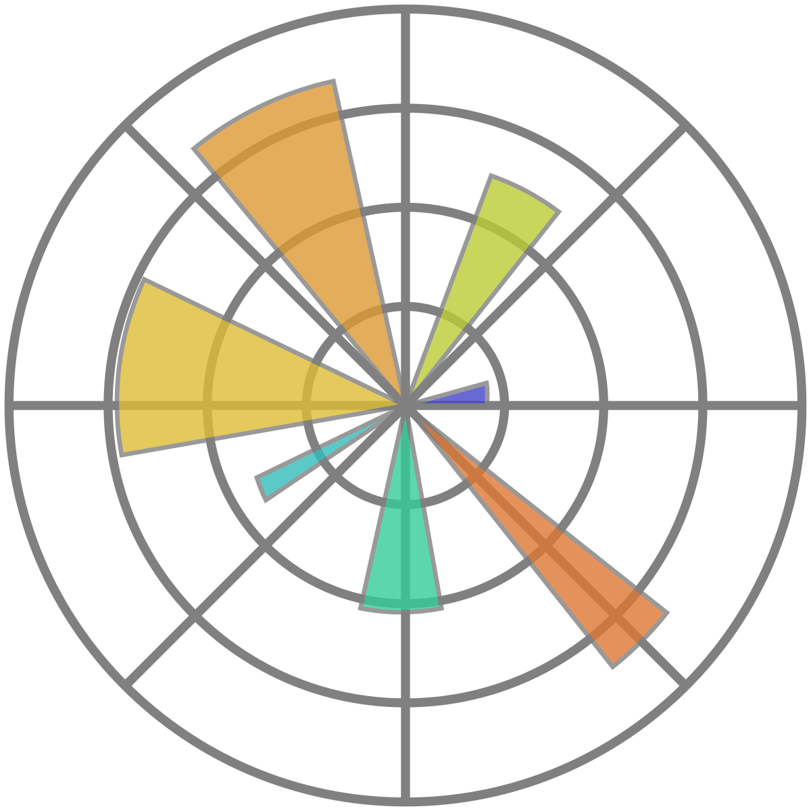
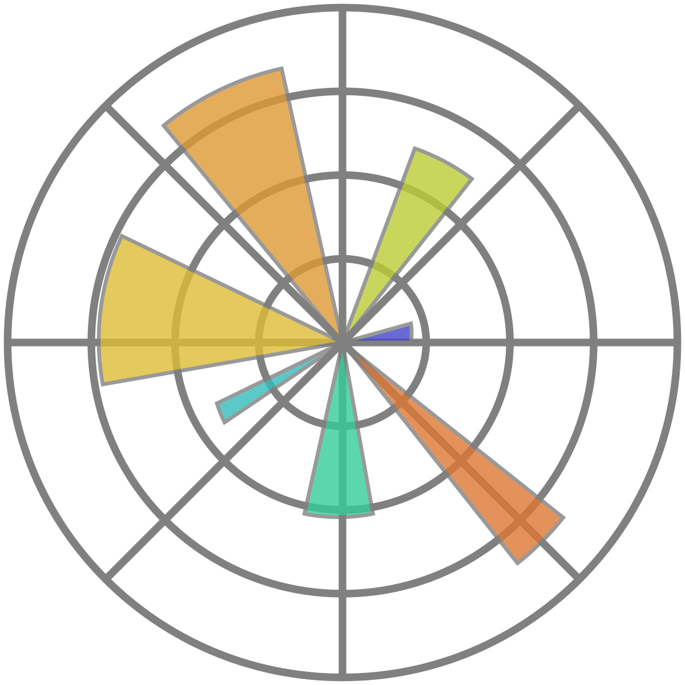

Resume
Resume
Focused NLP Engineer with hands-on experience transforming text data into actionable insights. Proven expertise in natural language processing, machine learning algorithms, text analytics, and end-to-end model deployment.
Experience
PROFESSIONAL EXPERIENCE 2024
SOFTWARE ENGINEER
Software Engineer Gateway Software Solutions Private Limited, Coimbatore
- Developed a cyberbullying detection system using Natural Language Processing (NLP) and Machine Learning to analyze and classify social media content.
- Implemented sentiment analysis, image classification using deep learning, and keyword-based filtering techniques to identify harmful content.
- Utilized Python, TensorFlow, Scikit-learn, and NLP libraries for model development and performance optimization.
- Built an interactive user interface with Streamlit for real-time monitoring and content visualization.
- Integrated MongoDB for managing large-scale social media datasets efficiently.
- Preprocessed data using tokenization, lemmatization, and stop-word removal to improve model accuracy.
- Collaborated with team members to deploy the solution and ensured it adhered to data security guidelines.
- Documented workflows and model performance to streamline system updates and knowledge sharing.
INTERNSHIP EXPERIENCE 2024
DATA SCIENCE SCHOLAR-TCE
Machine Learning Intern IIIT Allahabad
- Predicted startup success rates using data analytics and machine learning techniques.
- Handled data preprocessing, feature engineering, and predictive modeling.
- Collaborated with team members to integrate models into production pipelines for real-time analysis.
- Developed AI solutions for crop prediction using soil and climate data.
- Built predictive models with Python, Pandas, and TensorFlow.
- Conducted exploratory data analysis to extract actionable insights from large datasets.
- Designed a hospital management system with HTML, CSS, and JavaScript.
- Implemented database management for patient records.
- Enhanced UI/UX by optimizing website layout and ensuring responsive design across devices.
Education
2021-2026
Integrated MSc in Data Science
Thiagarajar College of EngineeringGrade: First class distinction.
2020-2021
Higher Secondary School Education
Devasakayam Public SchoolGrade: First class distinction 90.92%.
Tech Stack I Am Interested In


 



Projects
Projects
Below are sample Data Analytics projects using Machine Learning, Deep Learning, NLP, OpenCV, SQL, Python, and Power BI.
AI-Powered Medical Healthcare System for Multi-Disease Diagnosis
Develop an AI diagnostic system using machine learning and deep learning to detect Alzheimer’s, Brain Tumor, COVID-19, Diabetes, Heart Disease, Pneumonia, and Skin Cancer.
Real-time Object Detection and Tracking with YOLOv8 using Streamlit
Developed a real-time object detection and tracking system using YOLOv8 & Streamlit, ensuring fast, accurate identification & efficient tracking of objects in images & videos.
AI-Driven Agricultural Farming for Crop, Fertilizer, and Disease Management
A web platform powered by Machine Learning and Deep Learning, offering crop recommendations, fertilizer suggestions, and plant disease detection to enhance farming productivity.
Startup Success Prediction Using Machine Learning Techniques
This project uses machine learning to predict startup success based on key factors like funding and market trends, helping investors and entrepreneurs make informed decisions and minimize risks.
Cyberbullying Detection Using Natural Language Processing
This project utilizes Natural Language Processing techniques to identify & analyze cyberbullying in text data. It helps detect harmful content on social media, enabling proactive moderation & user protection.
License Plate Recognition using Deep Learning & OCR
This project uses deep learning and OCR to detect vehicle number plates, streamlining traffic monitoring and law enforcement with real-time processing and seamless automation.
Zomato Sales and Growth Dashboard Using Power BI
Power BI dashboard provides insights into Zomato's sales, user growth, and order trends. It visualizes key metrics like total sales, yearly growth, and average order value for data-driven decision-making.
Streamlit-Based Computer Vision Attendance System
Streamlit-based application leverages computer vision and facial recognition to automate attendance tracking. It enhances accuracy, efficiency, and reliability in attendance management systems.
Coffee Shop Sales Analytics Using an Excel Dashboard
Excel dashboard analyzes coffee shop sales & purchasing trends, visualizing key metrics to support data-driven business growth. It helps optimize sales strategies & improve customer experience.
Book Chapters, Conference and Journal
IET Digital Library – Brain Tumor Classification Using Deep Learning
IET Digital Library features a book chapter from Deep Learning in Medical Image Processing and Analysis. It explores brain tumor classification using deep learning techniques.
Software Startup Success Prediction at IEEE INCOWOCO 2024
Machine Learning Methods of Comparative Analysis, at IEEE INCOWOCO at Symbiosis International University, Pune. Engaged with experts and explored advancements in machine learning and computing.
Deep Learning Advancements in Malaria Diagnosis – IGI Global
CNN model achieves 96.5% accuracy in malaria detection using PyTorch and GPU acceleration. It explores data augmentation, hyperparameter tuning & transfer learning for improved diagnostics.
AI-Powered Human Recognition: Ethical Challenges and Future Directions – Journal of Artificial Intelligence
Ethical implications of AI-driven human recognition systems, addressing privacy concerns, biases & regulatory challenges. It also examines future advancements & responsible AI deployment strategies. ✅ This paper is ACCEPTED and ONGOING to PUBLISH!!!!
Optimizing Agricultural Decision-Making: Leveraging SMOTE and Machine Learning for Balanced Data Insights – CRC Press
Integration of SMOTE with machine learning to address data imbalance in agricultural decision-making, It significantly enhances predictive accuracy, ensuring reliable insights for sustainable farming practices. ✅ This paper is ACCEPTED and ONGOING to PUBLISH!!!!
CODING PLATFORM
0
Achievements
0
Projects
0
Mentored Students
0
Cups of coffee
Contact
Contact Me
Below are the details to reach out to me!
Address
Bengaluru, India